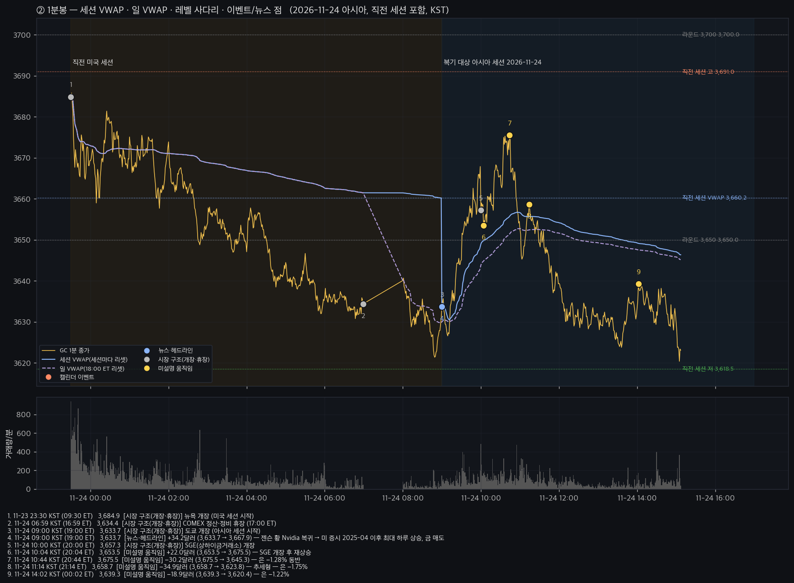
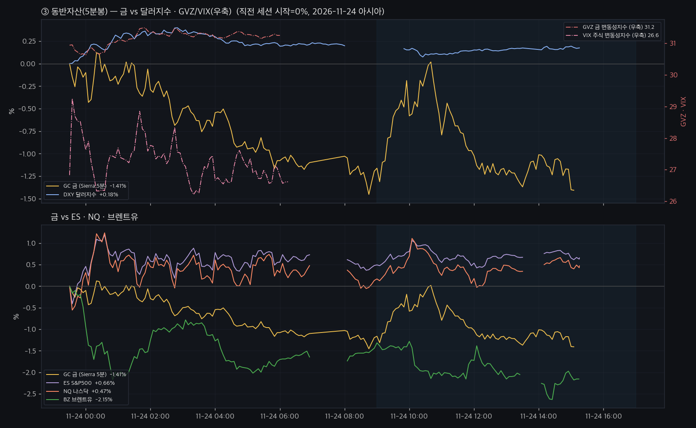
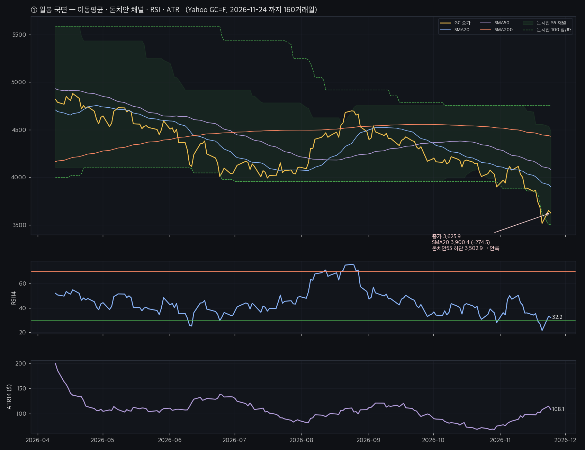

2026-11-24 아시아 세션 복기 (19:00~03:00 ET / 09:00~17:00 KST)
작성 15:40 KST · 틱 GC_2026-11-24.p1520.ok window_utc 11-23 22:00~11-24 06:15 · bars_in_window 428 · empty_minutes 7 · written_kst 15:18:37 · 세션 368봉(00:00~06:07 UTC(Coordinated Universal Time, 협정 세계시)). 이 세션의 예측 노트는 없음 — 11-24 07:45 아시아 예측 cron 이 Claude 로그인 없음으로 실패(같은 오류로 11-23 21:50 유럽 복기·22:15 미국 예측, 11-24 05:00 D·07:20 미국 복기도 실패). 점수 na, 실측·타임라인·원인만 기록.
■ 그림 — 세션 지도

점 번호 → 그림 아래 목록.
■ 점수 na (예측 없음) — 실측만
| 항목 | 예측 | 실측 (틱 480봉, 전 구간 보충 16:40) | 판정 |
|---|
| 고저폭 | (없음) | 64.1달러 = 1.77% (고 3,676.7 @10:45 KST → 저 3,612.6 @15:37 KST) | na |
| 가격대 | (없음) | 시가 3,630.7 기준 위 +46.0 / 아래 −18.1달러 | na |
| 방향 | (없음) | 하락 — 종가 3,620.0, 종가−시가 −10.7달러 (−0.30%) | na |
| 이벤트 | (없음) | 등급표 이벤트 없음 · SGE(Shanghai Gold Exchange, 상하이금거래소) 개장 20:00 ET(10:00 KST) 5분 −14.4달러 | na |
| 킬스위치 | (없음) | 5분 고저 ≥18.6(3배) / 거래량 ≥2,185(5배) — 발동 0회 (5분 최대 15.6달러) | — |
실측 출처 · 구간
session_actuals.py GC_2026-11-24.csv asia --events 20:00 --buckets 0-60,60-120,120-240,240-360,360-10000.
- 구간(고저 · 종−시, 달러): 09:00~ 44.2 · +37.2 / 10:00~ 25.1 · −13.9 / 11:00~13:00 31.9 · −22.7 / 13:00~15:00 16.3 · +0.3 / 15:00~17:00 20.0 · −12.4. 거래량 43,223계약(분당 90), 1분 고저 중앙 2.4 / p90 4.4, 5분 중앙 5.9달러·430계약. (전 구간 보충 16:40)
- 개장 전: 11-23 미국 종가 3,630.9(미국 세션 −59.2달러, 09:30 고점 3,691.0) → 아시아 시가 3,630.7(갭 없음).
■ 핵심 메시지
1. 첫 1시간 +37.2달러(3,630.7 → 3,669.0)는 Nvidia 젠슨 황 CEO(Chief Executive Officer, 최고경영자) 복귀 → 기술주 반등 → "청산 매도 압력 완화" 경로
- 현물 1% 가까이 올라 3,666.01(Zaobao/Reuters 번역) · 은 +0.96%·ES(E-mini S&P 500 futures, S&P500 미니 선물) +0.32% 동반. 01 §5 'AI·기술주 → 금 청산형' 의 역방향(주식 회복 → 금 회복) 사례.
2. SGE 개장 20:00 ET 1분 −10.6달러(483계약, 세션 최대 1분)에서 상승이 꺾임 — 고점은 10:45 KST 3,676.7 한 번 더, 이후 −59.5
- SGE 개장이 세션 최대 1분인 날 4건째(11-02·11-03·11-23 상승, 11-24 하락) — 부호는 섞이고 크기만 일관.
3. 10:45 뒤 하락은 은 동반 청산(1분 r(동시 상관, −1~+1) +0.83, 은 세션 −2.38%), 달러 몫 0
- DXY(US Dollar Index, 달러 인덱스(주요 6통화 대비 달러 가치)) −0.007%·10년 ≈ −2bp(금 쪽)·ES +0.20% — 금리·달러·주식 어느 것도 하락 설명 못 함. 12월 인상 확률 95.1%·Williams "할 일 남아"(Zaobao)는 배경, 분 단위 촉발 아님.
■ 움직임 타임라인 (틱, 전환 임계 12.4달러)
움직임 타임라인 — 5건 모두 '소폭'(거래량 ≤1.9배), 원인 배경 확인 1건(#1)
| # | 시작 KST (ET) | 지속 (분) | 움직임 (달러) | 가격 → 가격 | 거래량 배수 | 촉발 추정 1분 | 상태 |
|---|
| 1 | 09:00 (19:00) | 59 | +34.2 | 3,633.7 → 3,667.9 | 1.3배 | 19:32 ET (401) | Nvidia CEO 복귀 기술주 반등 |
| 3 | 10:04 (20:04) | 40 | +22.0 | 3,653.5 → 3,675.5 | 1.5배 | 20:35 ET (326) | SGE 개장 후 재상승 |
| 4 | 10:44 (20:44) | 19 | −30.2 | 3,675.5 → 3,645.3 | 1.9배 | 20:55 ET (472) | 은 −1.28% 동반 |
| 6 | 11:14 (21:14) | 142 | −34.9 | 3,658.7 → 3,623.8 | 0.7배 | 21:30 ET (256) | 추세형 — 은 −1.75% |
| 8 | 14:02 (00:02) | 63 | −18.9 | 3,639.3 → 3,620.4 | 1.0배 | 00:30 ET (397) | 은 −1.22% |
■ 원인 추적 — R1 1건(SGE 개장, 캘린더 밖)
원인 추적
| 행 | 촉발 ET | 확인한 것 | 동반 자산 같은 구간 (DXY % · 10년 bp · 은 % · ES % · BZ(ICE Brent crude futures (Yahoo ticker BZ=F), 브렌트유 선물 종목코드) %) | 분류 |
|---|
| 1 | 19:00~19:59 | 젠슨 황 Nvidia 복귀 → 미 증시 2025-04 이후 최대 하루 상승, 금 매도 압력 완화(Zaobao) · 저가 매수(Reuters) | n/a · −0.5 · +0.96 · +0.32 · +0.08 | 위험선호 회복 → 금 청산 완화(G) |
| 2(최대 1분) | 20:00 | SGE 개장 1분 −10.6·5분 −14.4·15분 고저 16.3, 진정 11분 | — | 캘린더 밖 구조 이벤트 |
| 4·6·8 | 20:44~00:30 | 분 헤드라인 (원인 미확인) — 검색 gold price Asia November 24 2026 · gold silver pare gains Tuesday November 24 2026 | +0.00~+0.06 · −0.5~+0.9 · −1.28~−1.75 · −0.25~+0.04 | 은 주도 금속 차익실현 추정(G) |
■ 동반 자산 · 경로 분해
세션 −10.3달러(00:00~06:07 UTC) — 달러 몫 ≈ 0달러, 은 동행이 전부
- 세션 변화: DXY −0.007% · ZN(10년 국채 선물) +0.13%(≈ −2bp) · 은 −2.38% · ES +0.20% · 브렌트 −0.72% · USDJPY(US Dollar / Japanese Yen, 달러·엔 환율) +0.15%.
- 1분 동행 상관: 은 +0.83 · ES +0.35 · DXY −0.24 · EURUSD(Euro / US Dollar, 유로·달러 환율) +0.19 · ZN −0.05. 선행 lag +1~+10 전부 |0.13| 이하.
- β: 7일 기준선 금~DXY β(달러 1% 상승당 금 변화) −1.45 → 달러 몫 +0.01%. 출처
gold_session_driver_decomp.py 캐시 데이터/companion_1m/2026-11-24. VIX(CBOE(Chicago Board Options Exchange, 시카고옵션거래소) Volatility Index, S&P500 변동성 지수)·GVZ(CBOE Gold ETF(Exchange-Traded Fund, 상장지수펀드) Volatility Index, 금 ETF 변동성 지수) 정규장 전 결측.

5분봉, 직전 세션 시작=0%. 위: 금 vs 달러지수, 아래: 금 vs ES·NQ(E-mini Nasdaq-100 futures, 나스닥100 선물)·브렌트유.
■ 교훈 → 학습원장
예측이 없어 적중/빗나감 판정 불가 — 원장 행 추가 없음
- 관찰(검증 대상): #41(급락 주 다음 월요일 SGE 15분 종가 VWAP(Volume-Weighted Average Price, 거래량가중평균가격) 위 → A)과 같은 조건을 화요일에 대 보면 10:15 KST 15분 종가 3,658.3 이 세션 VWAP 근처라 판정 보류 — 이번 세션은 #41 검증 표본으로 쓰지 않는다.
■ 일봉 국면 (그림)

■ 빗나간 이유 (원인 A~H)
| 빗나간 것 | 원인 | 한 줄 |
|---|
| (예측 없음) | — | 11-24 07:45 cron 로그인 실패(운영 사고, A~H 밖) |
복기 검색 (01_뉴스 채널 §4-4) — 켜진 트리거 R1, 2쿼리 / 1페이지
| 트리거 | 판정 | 알게 된 것 / 적은 곳 |
|---|
| R1 | 발화 — 1분 12.0 ≥ p90 4.7, 20:00 ET, 예정 이벤트 없음(SGE 개장 캘린더 밖) | SGE 개장 확인 · 배경 Nvidia CEO 복귀 → 위 #1·#2 |
| R5 | 판정 불가 — 예측 없음 | — |
search_used R1:발화/부분. 데이터 축적: SGE_day_open_dates.csv 11-23 20:00 추가. occurrence_append 새 행 0(재개 이벤트 deferred 5건).
■ 개선 제안 (규칙표 수정 후보 — 월간 갱신 때 판단)
- SGE 개장(20:00 ET) 아시아 주의 시각 고정 — 세션 최대 1분이 개장 분인 날 4건째(11-02·11-03·11-23·11-24), 부호는 섞임 → 방향 아닌 크기 주의로.
- 운영: cron 로그인 실패가 11-20 에 이어 11-23 21:50~11-24 07:45 5건 연속 — 첫 실패 즉시 보고 장치(11-20 유럽 복기 §5 #1 재제안).
■ 미확인
못 확인한 것 3건 — 10:45 KST 고점 뒤 반락 촉발 헤드라인 · VIX·GVZ 아시아 시간대 · 15:07~17:00 KST 꼬리(21:50 유럽 복기 ⓪)
출처·파일